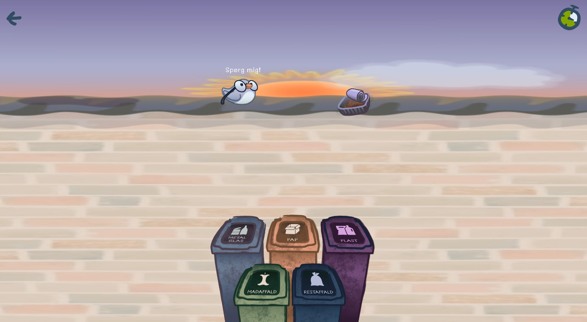
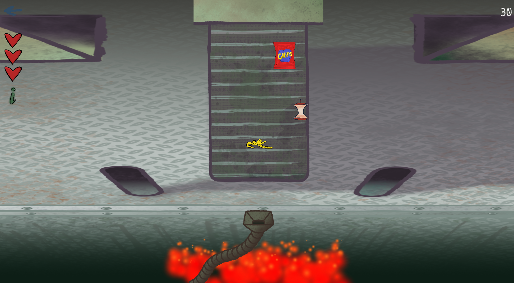
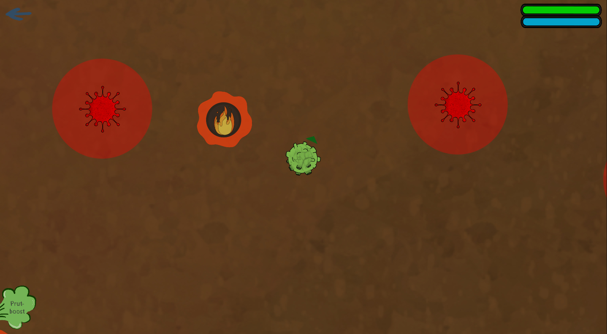

Whereabout that trash/h1>
Whereabout that trash, is an educational game for the phone dedicated to inform the player about recycling trash
as well as what happens to recycled trash. As the game is a prototype it does not explore what happens to all types of trash,
but focuses on teaching the player the basics of trash sorting in Denmark and the resulting processing of food trash.
The different parts of the game both include a written description as well as an interactive gameplay rendition.
The first part of the game consists of the player dragging and dropping garbage in the corresponding container. This is done with
a time limit, and the player can try to get as much garbage sorted as possible, earning up to three stars depending on results.
Earning up to three stars it possible for any of the games.

The second game is about the second part of the trash sorting system, where the unwanted waste is supposed to be incinerated, and the wanted waste is collected. The player thus has to collect the food waste, and let the other irrelevant garbage be incinerated. If the player collects the wrong garbage or lets food waste be incinerated three times, they lose.

The third game takes place in a food waste tank in a plant where the chemical energy in the food waste is transformed into electric energy. In this process the food is processed by bacteria cultures which raises the temperature of the the waste, allowing for electric energy procuction. In the game the player plays as a bacteria, that has to flourish by finding food, avoiding rival cultures, and avoiding hotspots.
